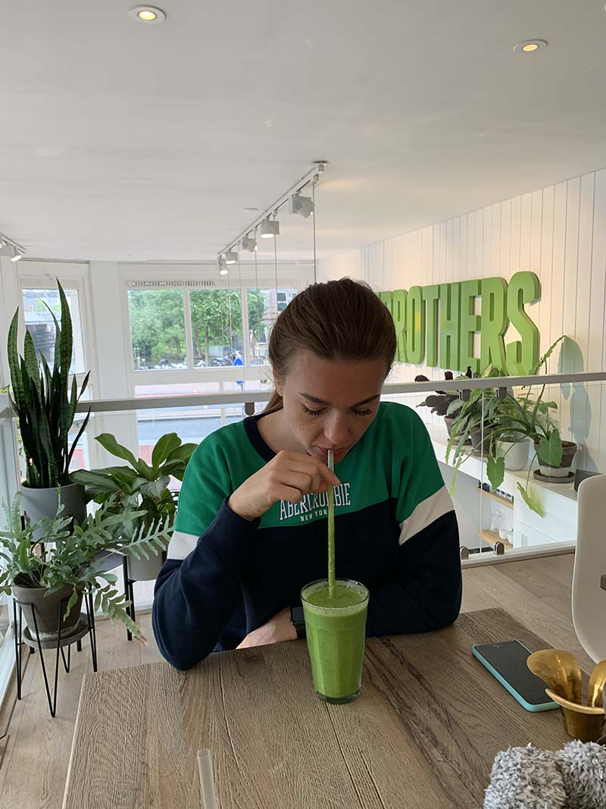

Images
My hobbies
- Cooking
- Design
- Travelling
About Me
Cooking, design, and traveling are my true passions in life. Being a vegetarian for over ten years has allowed me to explore the joys of cooking vegetarian dishes and baking delicious cookies. The world of vegetarian cuisine continuously inspires my creativity and brings me a sense of happiness. Additionally, volunteering at a yoga studio is one way I contribute to a cause I care about while staying connected to a community of yoga enthusiasts.
I am studying IMD at Algonquin College, and am happy to start my 1st semester. My main goal is to learn the skills and knowledge that will help me find a great job in the future. I look forward to exploring the design world through this program and using my passion and creativity to make a positive difference in the industry.
Quote
"Success is not final; failure is not fatal: It is the courage to continue that counts."
— Winston Churchill